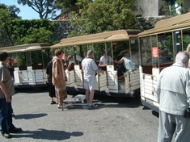
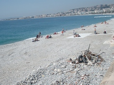
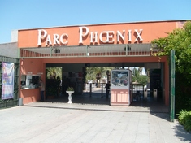
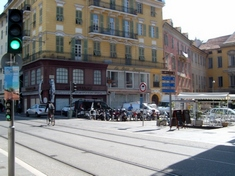
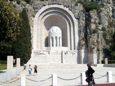
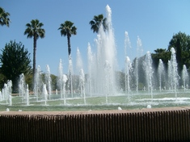

|
Visiting Nice (French Riviera) |
Another tourist attraction in Nice is its famous flower market (Le marché aux Fleurs) at the Cours Saleya not too far away from the starting point of the little train but has more to offer than just flowers as there is also a fruits market nearby. As with most markets in France it is closed on Mondays. A dip in the pollution-free sea here is a must for swimmers though you will have to put up with quite big pebbles all the way to the sea. The Parc Phoenix is also worth a visit. Its well-heated greenhouse contains luxurious plants as well as animals of a distant land that can be admired at close range. And let's not forget that Nice is also famous for its Carnival in winter (the next Nice Carnival will be held from February 18 to March 8, 2011). If you are interested go to its official site here for more details. Note: Click on any photo below to reproduce its original size and press the F11 button on your keyboard to fill the whole screen (press F11 again to go back to where you were). All the photos were taken in May 2010. |

 The little train makes a stop at the Colline du Chateau. |
 The pebbled beaches in Nice do not make for easy walking. |
 The Parc Phoenix is one of Nice's tourist attractions. |
 Life goes on at a leisurely pace in Nice. |
 This memorial in Nice commemorates those who died for France. |
 Water spouting from some 20 fountains bring a touch of freshness to Nice. French Riviera (Part III - Monaco) |